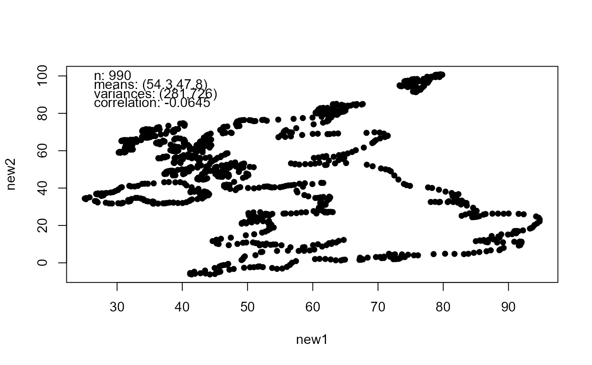
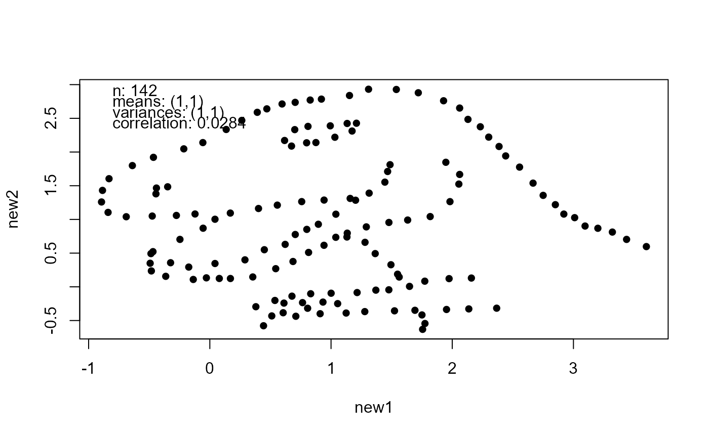

Modifies a dataset x so that it shares sample summary statistics with
another dataset x2. `
mimic(x, x2, ...)
| x, x2 | Numeric matrices or data frames. Each column contains observations
on a different variable. Missing observations are not allowed.
|
|---|---|
| ... | Additional arguments to be passed to |
A dataset with the same format as x. The returned dataset has the
following summary statistics in common with x2.
The sample means of each variable.
The sample variances of each variable.
The sample correlation matrix.
The estimated regression coefficients from least squares linear
regressions of each variable on each other variable.
The target and new summary statistics are returned as attributes
old_stats and new_stats.
If x2 is supplied then it is returned as a attribute old_data.
The input dataset x is modified by shifting, scaling and rotating
it so that its sample mean and covariance matrix match those of x2.
anscombise modifies a dataset so that it shares sample summary
statistics with Anscombe's quartet.
### 2D examples # The UK and a dinosaur got_maps <- requireNamespace("maps", quietly = TRUE) got_datasauRus <- requireNamespace("datasauRus", quietly = TRUE) if (got_maps && got_datasauRus) { library(maps) library(datasauRus) dino <- datasaurus_dozen_wide[, c("dino_x", "dino_y")] UK <- mapdata("UK") new_UK <- mimic(UK, dino) plot(new_UK) }# Trump and a dinosaur if (got_datasauRus) { library(datasauRus) dino <- datasaurus_dozen_wide[, c("dino_x", "dino_y")] new_dino <- mimic(dino, trump) plot(new_dino) }## Examples of passing summary statistics # The default is zero mean, unit variance and no correlation new_faithful <- mimic(faithful) plot(new_faithful)# Change the correlation mat <- matrix(c(1, -0.9, -0.9, 1), 2, 2) new_faithful <- mimic(faithful, correlation = mat) plot(new_faithful)### A 3D example new_randu <- mimic(datasets::randu, datasets::trees) # The samples summary statistics are equal get_stats(new_randu)#> $n #> [1] 400 #> #> $means #> new1 new2 new3 #> 13.24839 76.00000 30.17097 #> #> $variances #> new1 new2 new3 #> 9.847914 40.600000 270.202796 #> #> $correlation #> new1 new2 new3 #> new1 1.0000000 0.5192801 0.9671194 #> new2 0.5192801 1.0000000 0.5982497 #> new3 0.9671194 0.5982497 1.0000000 #> #> $intercepts #> new1 new2 new3 #> new1 0.00000 0.2557471 0.1846321 #> new2 62.03131 0.0000000 0.2318999 #> new3 -36.94346 -87.1236135 0.0000000 #> #> $slopes #> new1 new2 new3 #> new1 1.000000 -6.188395 7.677857 #> new2 1.054369 1.000000 69.003356 #> new3 5.065856 1.543350 1.000000 #> #> $rsquared #> [,1] [,2] [,3] #> [1,] 1.0000000 0.2696518 0.9353199 #> [2,] 0.2696518 1.0000000 0.3579026 #> [3,] 0.9353199 0.3579026 1.0000000 #>#> $n #> [1] 31 #> #> $means #> Girth Height Volume #> 13.24839 76.00000 30.17097 #> #> $variances #> Girth Height Volume #> 9.847914 40.600000 270.202796 #> #> $correlation #> Girth Height Volume #> Girth 1.0000000 0.5192801 0.9671194 #> Height 0.5192801 1.0000000 0.5982497 #> Volume 0.9671194 0.5982497 1.0000000 #> #> $intercepts #> Girth Height Volume #> Girth 0.00000 0.2557471 0.1846321 #> Height 62.03131 0.0000000 0.2318999 #> Volume -36.94346 -87.1236135 0.0000000 #> #> $slopes #> Girth Height Volume #> Girth 1.000000 -6.188395 7.677857 #> Height 1.054369 1.000000 69.003356 #> Volume 5.065856 1.543350 1.000000 #> #> $rsquared #> [,1] [,2] [,3] #> [1,] 1.0000000 0.2696518 0.9353199 #> [2,] 0.2696518 1.0000000 0.3579026 #> [3,] 0.9353199 0.3579026 1.0000000 #>